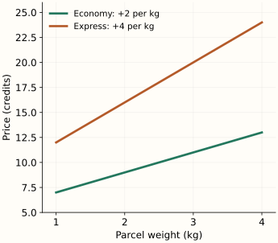

Interaction Features
An interaction lets the effect of one feature depend on another. A kilogram of extra parcel weight may add a different delivery charge for economy and express shipping. A model with only separate weight and service terms cannot represent that difference in slopes. A weight × service feature can.
The polynomial-features chapter explains how to construct products and why a model can remain linear in its weights. Here we focus on what a selected product means, how to interpret it and when a ratio is a useful separate feature.
What does an additive model assume?
Use $x$ for parcel weight in kilograms and $e$ for the express indicator: 0 for economy, 1 for express. Consider the illustrative pricing rule $5+2x+3e$. Both services charge 2 credits per kilogram, and express adds a fixed 3 credits.
This is an additive model: the express surcharge is the same at every weight. Increasing weight by one kilogram adds the same amount for either service. Two price-versus-weight lines would be parallel.
Suppose the observed pricing instead has economy charging 2 credits per kilogram and express charging 4. Changing only the express intercept cannot create a different slope. We need a term that is active for express and grows with weight.
Turn on the extra slope with a product
The product $xe$ does exactly that. It is zero for economy and equals the parcel weight for express. Add 2 credits for each unit of this product:
Substitute the service indicator to read the model. For economy, $e=0$, leaving $5+2x$. For express, $e=1$, leaving $8+4x$. The product changed the slope as well as allowing the service-specific starting charge.

The express surcharge at weight $x$ is $3+2x$: 5 credits for 1 kg, 9 credits for 3 kg. The coefficient 2 on $xe$ is the extra per-kilogram charge for express, not the entire express surcharge.
Read an interaction relative to its inputs
In this model, the coefficient on $x$ is the weight effect when $e=0$. The coefficient on $e$ is the express difference when $x=0$. Zero kilograms is outside the example's observed 1–4 kg range, so the latter coefficient should not be treated as the surcharge for a typical parcel.
You can instead center weight at a useful reference such as 2 kg. Let $u=x-2$. The same predictions then come from $9+2u+7e+2ue$. The coefficient 7 now describes the express difference at 2 kg. Nothing about the prices changed; the point at which a coefficient is interpreted changed.
Optional: why keep the separate terms when adding a product?
Keeping $x$ and $e$ alongside $xe$ lets the model represent ordinary effects as well as a changing effect. With only a product and an intercept, economy would have no weight effect because its product is always zero. The full expression also lets centering preserve the same family of predictions, as the expansion with $u=x-2$ shows. This is a useful modeling convention, often called hierarchy; a domain constraint may justify a different restricted model.
For two continuous features, the same idea applies: in $b+w_1x_1+w_2x_2+w_{12}x_1x_2$, increasing $x_1$ by one unit at a fixed $x_2$ changes the prediction by $w_1+w_{12}x_2$. Read the effect at relevant values of the other feature, rather than interpreting $w_1$ as one global effect.
Let the model estimate the coefficients
Construct a column for each chosen product and fit it with the original inputs. In the noiseless eight-row example below, ordinary least squares recovers the coefficients 5, 2, 3 and 2. An additive model compromises between the two slopes and retains error. This demonstrates representational capacity; zero error on these constructed training rows is not evidence of generalization on real shipments.
Python: compare additive and interaction models on the same rows
import numpy as np
from sklearn.preprocessing import PolynomialFeatures
from sklearn.linear_model import LinearRegression
from sklearn.pipeline import make_pipeline
# Eight illustrative observations, with both services at every weight.
X = np.array([[kg, express] for express in (0, 1)
for kg in (1, 2, 3, 4)], dtype=float)
y = 5 + 2*X[:, 0] + 3*X[:, 1] + 2*X[:, 0]*X[:, 1]
additive = LinearRegression().fit(X, y)
interaction = make_pipeline(
PolynomialFeatures(2, interaction_only=True, include_bias=False),
LinearRegression(),
).fit(X, y)
features = interaction.named_steps['polynomialfeatures']
regression = interaction.named_steps['linearregression']
print(features.get_feature_names_out(['weight', 'express']))
print(np.round(regression.intercept_, 6), np.round(regression.coef_, 6))
for model in (additive, interaction):
print(round(np.sqrt(np.mean((model.predict(X) - y)**2)), 6))
# [weight, express, weight express]; intercept 5; coefficients [2, 3, 2]
# Training RMSE: 1.118034, then 0.0.
interaction_only=True creates [weight, express, weight × express] for these two inputs. It does not generate weight² or express². In a formula interface, weight * express typically requests both separate terms and their interaction; weight : express requests the interaction itself. See the statsmodels reference below for that syntax.
Our product is fixed once the columns are defined. Scaling, feature selection and tuning its regularization still belong inside each training fold. Compare the full pipeline with the simpler baseline using the same validation splits. A product that improves only the training fit has not justified its added complexity.
Choose meaningful crosses, not every possible multiplication
A numeric feature multiplied by a category indicator gives that category its own adjustment to the numeric slope. With several categories, use a consistent reference-category or other encoding scheme so the intercept and main effects remain identifiable.
Some products add no information. Squaring a binary indicator gives the same indicator. Multiplying two mutually exclusive indicators from the same one-hot field always gives zero. Crossing two different categorical fields can be useful, but many combinations may be rare or absent; their estimates need enough observations or regularization.
An interaction describes the fitted relationship. It does not by itself show that changing one input would cause the outcome to change. Coverage also matters: if heavy parcels appear only in express data, the two service slopes are much harder to compare from observations.
Ratios express a different question
A ratio normalizes a quantity by an exposure or scale. For example, returns divided by eligible orders measures a return rate. Specify the population and observation window on both sides: dividing this month's returns by unrelated orders does not define the intended rate.
Zero exposure is different from an observed rate of zero. Adding an arbitrary small constant to every denominator changes the feature's meaning and may create huge values. Use an explicit missing/no-exposure policy, then handle that state consistently in the model. If smoothing is appropriate, define and validate it as an estimator rather than hiding it as a numerical fix.
Python: keep zero exposure distinct from zero returns
def return_rate(returns, orders):
# Counts must be whole, nonnegative and from the same observation window.
if type(returns) is not int or type(orders) is not int:
raise ValueError("expected integer counts")
if not 0 <= returns <= orders:
raise ValueError("inconsistent counts")
return None if orders == 0 else returns / orders
print(return_rate(0, 0)) # None: no exposure
print(return_rate(0, 10)) # 0.0: observed orders, no returns
print(return_rate(2, 10)) # 0.2
At prediction time, both numerator and denominator must already be available. A future return count would leak the very outcome being predicted. The aggregation chapter develops historical features with explicit time boundaries; the units chapter explains how units carry through products and ratios.
Construct a selected interaction in C++
A targeted transformation makes the feature contract visible: positive finite kilograms, a binary service indicator and exactly one product. This function returns the three model inputs; the intercept stays in the model.
C++17: weight, service and their product
#include <array>
#include <cmath>
#include <iostream>
#include <stdexcept>
std::array<double, 3> shipping_features(double kg, int express) {
if (!std::isfinite(kg) || kg <= 0)
throw std::invalid_argument("weight must be finite and positive");
if (express != 0 && express != 1)
throw std::invalid_argument("express must be 0 or 1");
return {kg, static_cast<double>(express), kg * express};
}
int main() {
auto f = shipping_features(3, 1);
double price = 5 + 2*f[0] + 3*f[1] + 2*f[2];
std::cout << f[0] << ' ' << f[1] << ' ' << f[2] << '\n';
std::cout << price << '\n'; // [3, 1, 3] gives 20 credits.
}
References and further reading
- Statsmodels: multiplicative interactions — how separate terms and products become columns in a model matrix.
- Scikit-learn: PolynomialFeatures — controlled interaction-only expansion and output feature names.
- Scikit-learn: common pitfalls — validation boundaries for scaling, selection and model fitting.